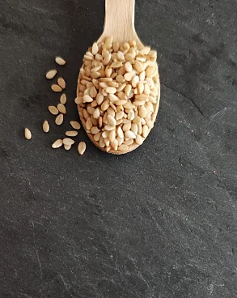

Conoce tus especias: un espacio reservado para el más cocinillas
¿Tienes un montón de especias en casa y no sabes ni para qué se usan?
Busca abajo tu especia o el tipo de comida que quieres preparar.
Y no solo te daré info chula sobre tu especia sino que tendrás alguna receta para que puedas practicar.
ENCUENTRA TUS ESPECIAS SEGÚN EL TIPO DE C0MIDA QUE QUIERAS COCINAR
Achiote
Se suele llamar "azafrán del pobre" y se utiliza como colorante natural desde hace siglos. También aporta notas de pimienta y un sabor ligeramente cítrico, ahumado y terroso.
Ajo
Uno de los más antiguos de los condimentos que fue calificado como la "Gran Panacea". Amplifica los aromas y aporta un sabor más que característico a tus platos.
Anís estrellado
Se cultiva desde hace más de 3.000 años con fines culinarios y medicinales. Es un ingrediente imprescindible en las cocinas china, india y vietnamita.
Cacao
El cacao ya se utilizaba en el 1.500 a.C. en el sur de México. Tiene un sabor complejo con notas amargas, terrosas y fragantes.
Canela
La canela se cultiva en diversas regiones de asia y en sí no tiene un sabor dulce si no que potencia la percepción del dulzor del resto de ingredientes.
Cardamomo
El cardamomo se usa con fines culinarios y medicinales desde hace más de 2.000 años, además puede utilizarse para platos dulces y salados.
Cayena
Es una variedad de guindilla imprescindible para la cocina latinoamericana.
Cilantro
Tiene su origen en Israel y Egipto. Su sabor agridulce recuerda al de la corteza de naranja deshidratada.
Clavo
El clavo se ha utilizado como aromatizador durante miles de años y en la Edad Media se empezó a darle un uso más culinario.
Comino
Se hallaron restos de comino en las pirámides de Egipto. Es un elemento esencial en la cocina de África del Norte.
Cúrcuma
La cúrculma se utiliza como pigmento, por sus beneficios antiinflamatorio y antimicrobiano, además de sus dotes culinarias.
Curry
Podemos decir que el curry es la joya de las especias de la India. Aporta aroma y sabor a todos tus platos.
Jengibre
El jengibre fue una de las primeras especias que llegaron a Europa. Es muy picante, con un sabor cítrico y amaderado.
Laurel
Era símbolo de victoria en la cultura griega y romana. Debe añadirse al inicio de la cocción para que desprenda todo su aroma.
Nuez moscada
Durante muchos años los mercaderes guardaron la nuez moscada en secreto para proteger su mercancía. Tiene un aroma dulce y amaderado que combina para platos dulces y salados.
Orégano
El orégano pertenece a la familia de la menta y aporta un aroma delicioso a tus platos.
Pimentón
El pimentón es apreciado por sus aromas ahumados, terrosos, su picante y su sabor afrutado.
Pimienta de Jamaica
Los mayas utilizaban esta especia con fines medicinales. Por sus complejos sabores, se utiliza para condimentar platos dulces y salados.
Ras el hanout
El Ras el Hanout es la mezcla de especias más vendida en países árabes, sirve casi para todo y no contiene una sola receta única, sino que va cambiando según cada casa o familia.
Sésamo

El sésamo se utiliza en platos dulces, salsas, purés y como elemento decorativo.